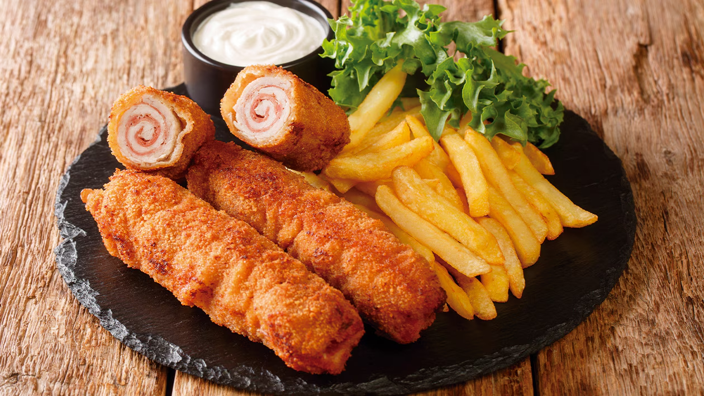
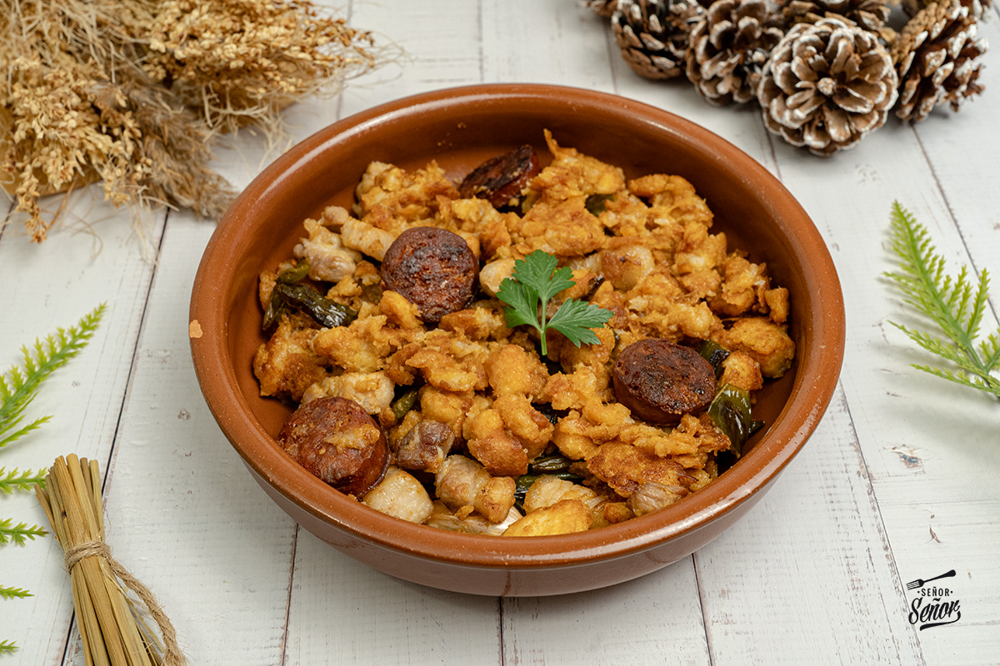
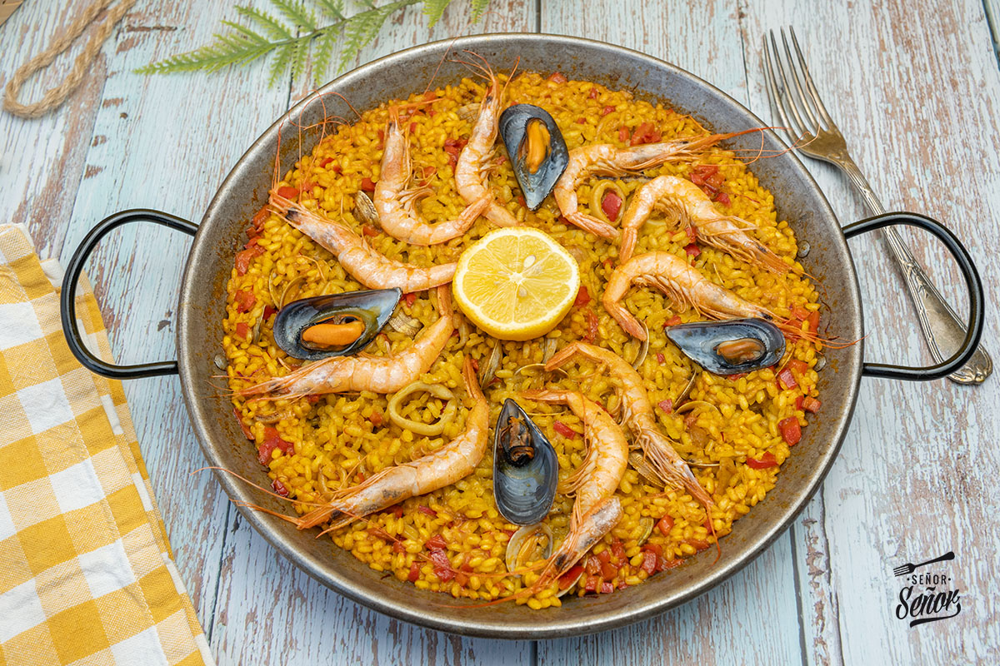
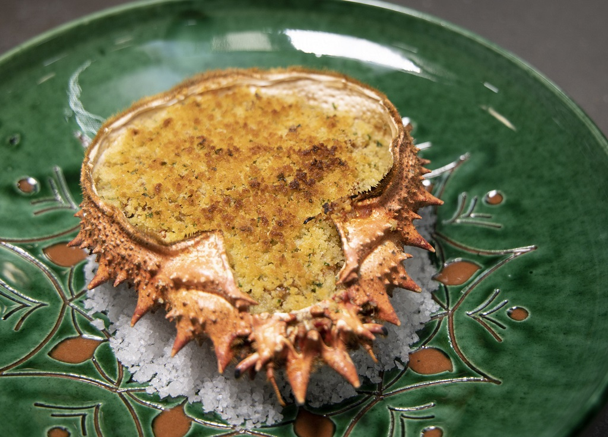

-
Taberna Cartie
La Taberna Cartie, situada en Sevilla, ofrece una propuesta gastronómica típica andaluza, con tapas y platos informales. Es un establecimiento bien valorado por su ambiente cercano y su oferta variada.
-
Restaurante Casa Curro (Osuna)
Casa Curro es un restaurante tradicional de Osuna especializado en cocina andaluza y tapas elaboradas con productos locales. Es muy frecuentado tanto por residentes como por turistas.

-
Mesón El Fontanés
Mesón de estilo tradicional que representa la cocina casera y regional, con platos típicos y un ambiente rústico propio de la gastronomía local.
-
Tapería El Pocillo
Tapería orientada a la degustación de tapas y raciones, ideal para conocer diferentes sabores de la gastronomía regional en un entorno informal.
-

El Rincón de la Reina (Trujillo)Restaurante ubicado en Trujillo, donde se puede disfrutar de la gastronomía extremeña basada en productos tradicionales como carnes, quesos y recetas locales.
-
Restaurante ATALAYA
Establecimiento de cocina tradicional que apuesta por productos del entorno y recetas representativas de la gastronomía regional.
-
Bar Zalla
Bar local típico que ofrece tapas y bebidas, formando parte de la vida social y gastronómica del destino.
-
Cantina EADA
Cantina de carácter informal con una oferta sencilla de platos y tapas, representativa de la restauración cotidiana local.
-
Restaurante El Guano
Restaurante de cocina tradicional orientado al uso de productos locales y recetas propias del territorio.

-
Restaurant Canals & Munné. Calçotades Sant Sadurni
Restaurante que participa en la tradición catalana de las calçotades, ofreciendo una experiencia gastronómica típica del Penedès.
-
La Ferla
Restaurante en Girona con cocina mediterránea de inspiración italiana, valorado por la calidad de sus platos y su cuidada propuesta gastronómica.
-
Restaurant Can Marqués (Especial)
Restaurante de cocina tradicional catalana que pone en valor los productos locales y la gastronomía del entorno con ambiente exclusivo.
